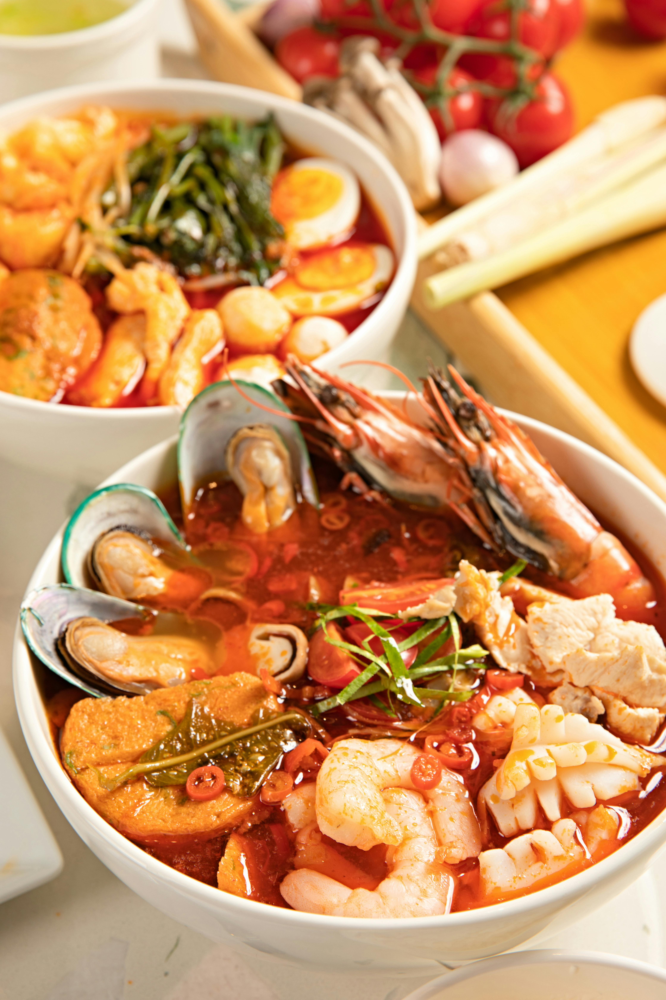
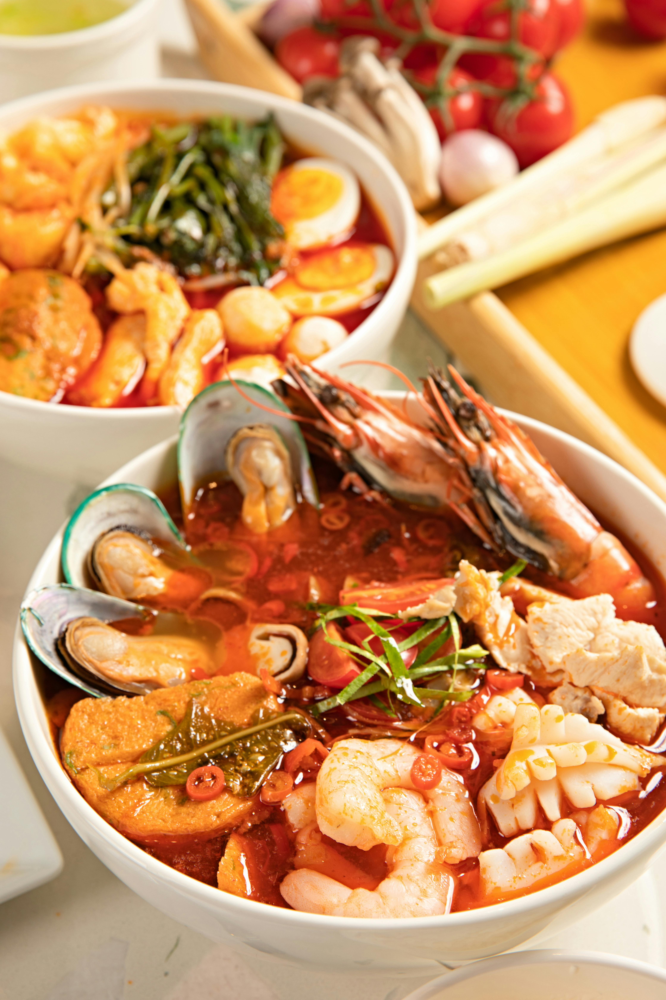
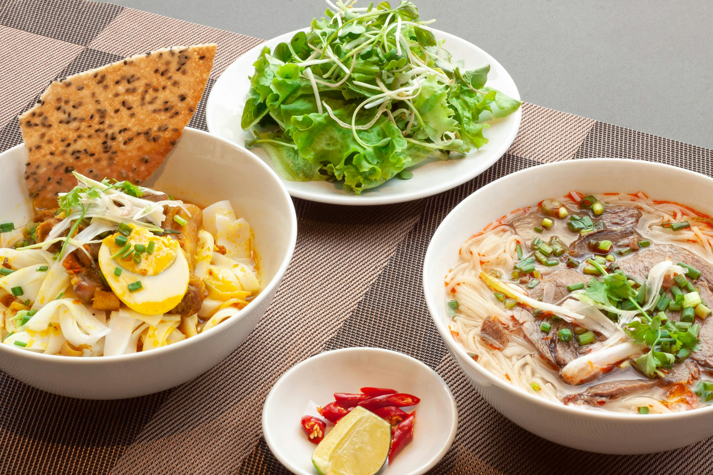
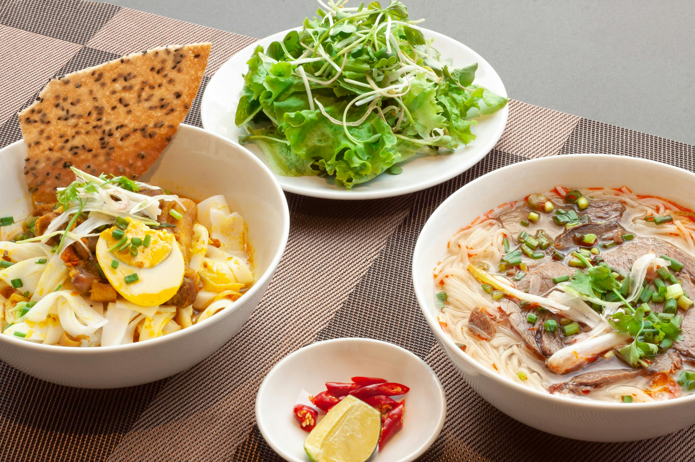

RESTAURANTE SABORES DEL BOSQUE
Sabores del Bosque es un restaurante inspirado en la riqueza de la naturaleza, donde cada plato refleja frescura, autenticidad y creatividad. Nuestro menú ha sido diseñado para resaltar lo mejor de los ingredientes locales, ofreciendo combinaciones que despiertan los sentidos y transmiten la esencia del bosque en cada bocado. Nos apasiona brindar una experiencia gastronómica que va más allá de comer, transformando cada visita en un momento de conexión con la tierra y sus sabores.
Nuestro espacio está pensado para que disfrutes en un ambiente acogedor, rodeado de detalles que evocan tranquilidad y armonía. La calidez del lugar se complementa con un servicio cercano y atento, ideal para compartir con familia, amigos o en una ocasión especial. Queremos que cada visita se convierta en un recuerdo memorable, donde el sabor, la compañía y la atmósfera se unan en perfecta sintonía.
En Sabores del Bosque no solo servimos comida, ofrecemos experiencias que alimentan el cuerpo y el alma.
 



 
